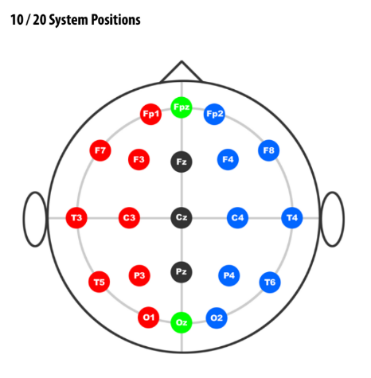

The 10-20 EEG Electrode Placement System
The 10–20 system (International 10–20 system) is an internationally recognized method for the standardized placement of scalp electrodes for EEG (electroencephalography), sleep studies, and neurofeedback. This system ensures that electrodes are positioned proportionally to the shape and size of each individual’s skull, allowing for consistent, reproducible results across studies and clinical sessions.
Key Principles
- "10" and "20" refer to the distances between adjacent electrodes, which are either 10% or 20% of the total front–back or right–left distance of the skull.
- The main anatomical landmarks used are the nasion (bridge of the nose), inion (bump at the back of the head), and the preauricular points (just in front of the ears).
- Electrodes are named with letters (indicating brain regions: F = frontal, C = central, P = parietal, O = occipital, T = temporal) and numbers (odd = left hemisphere, even = right, z = midline).
How to Measure and Mark
- Measure from nasion to inion (front to back of the head) and mark 10% and 20% intervals.
- Measure from left to right preauricular points (over the top of the head) and mark 10% and 20% intervals.
- Mark the circumference of the head and divide by 10% and 20% increments to locate lateral electrodes.
- Place electrodes at the intersection points according to the 10-20 system map.
Electrode Naming
- Fp: Frontal pole
- F: Frontal
- C: Central
- P: Parietal
- O: Occipital
- T: Temporal
- z: Midline
- Odd numbers: Left hemisphere
- Even numbers: Right hemisphere
Example Electrode Layout

Why Use the 10-20 System?
- Consistency: Ensures repeatable and comparable results across sessions and subjects.
- Coverage: Provides a standardized way to cover all major brain regions.
- Scalability: Can be extended to higher-density systems (10-10, 10-5) for more detailed recordings.
Additional Resources
- Wikipedia: 10–20 system (EEG)
- ASET: 10-20 System Demonstration PDF
- TMSi: The 10-20 System for EEG5
- YouTube: 10-20 International EEG Electrode Application Video